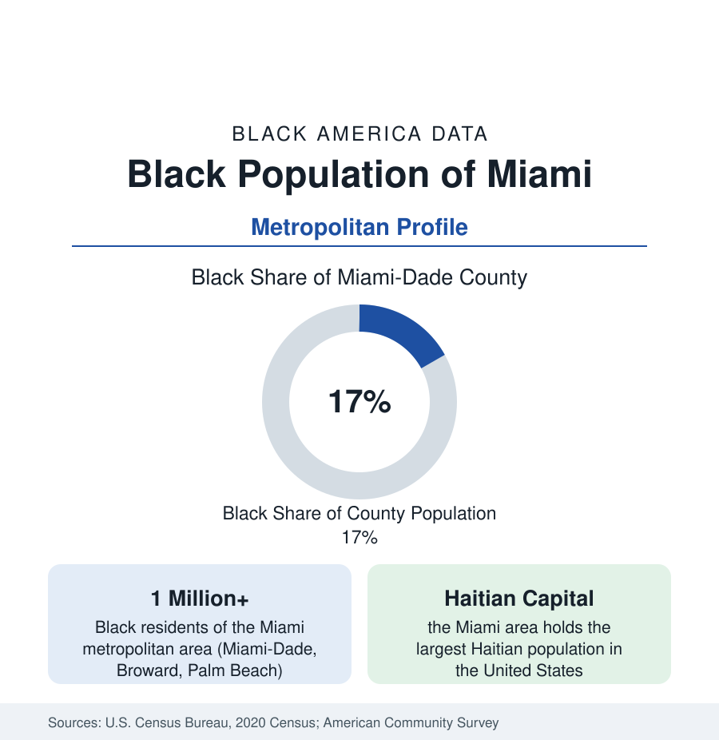

Black Cities
Black Miami: Dade, Broward, and the Haitian Capital
Greater Miami holds more than a million Black residents — African American, Haitian, Jamaican, and Afro-Latino — the most Caribbean Black metropolis in America. The census profile.

The Miami metropolitan area — Miami-Dade, Broward, and Palm Beach counties — holds more than one million Black residents, and no large American metro's Black population is more Caribbean. Haitians form the largest single Black nationality in the region and the largest Haitian community in the United States; Jamaicans, Bahamians, Trinidadians, and Afro-Latino populations layer over a native Black community as old as the city itself. The result is a Black metropolis that operates in English, Haitian Creole, French, and Spanish, and whose data require the birthplace splits this reference applies in every South Florida figure.
Historic Black Miami: Overtown and Liberty City
Miami was incorporated in 1896 with Black laborers — many of them Bahamian — forming a large share of the workforce that built it and of the men permitted to sign its charter. The Black community was confined to Colored Town, renamed Overtown, which became a flourishing entertainment and business district — the Harlem of the South in its own billing — until highway construction in the 1960s drove interstates through its center, dispersing thousands of households. Liberty City, built from the 1930s as one of the nation's first Black public-housing communities and growing into a large residential district, became the center of gravity; Brownsville, Coconut Grove's historic Black village (older than the city around it), Little Haiti, and Miami Gardens — today the largest majority-Black city in Florida, incorporated in the twenty-first century with a Black population above 100,000 — complete the county's Black map.
The Haitian Capital
Haitian migration, accelerating from the 1970s through the boat-lift era and after, built Little Haiti around Miami's Northeast Second Avenue and extended through North Miami, North Miami Beach, and deep into Broward County. The region's Haitian population — immigrants and their American-born children — numbers in the several hundred thousands, the largest concentration outside Haiti itself, large enough that Haitian Creole is a language of Miami-Dade's public life: of its ballots, its school system, its radio market, and its health clinics. The survey data show the community's classic immigrant arc — high labor participation, strong family structure, rising second-generation attainment — against the legal precarity that has shadowed Haitian status in federal policy across the decades.
Broward: The Suburban Center of Gravity
Broward County, centered on Fort Lauderdale, holds a Black population rivaling Dade's in size — roughly a quarter to a third of the county across its cities — and it is the region's suburban Black center: Lauderhill, majority Black and heavily Caribbean, bills itself accordingly; Lauderdale Lakes, Miramar, Pembroke Pines, Sunrise, and Plantation hold large and growing Black populations of homeowners. Palm Beach County adds Delray Beach, Riviera Beach, Belle Glade, and West Palm Beach's historic Black communities. The metro's Black median rises as its geography suburbanizes — Broward's Black household incomes run above Dade's in the survey data, with the immigrant communities' second generations driving the increase.
Composition and Contrasts
Black Miami's internal range is extreme. The region includes some of the most affluent Black and Caribbean suburban communities in the nation and, in Liberty City and Overtown, neighborhoods whose poverty and health indicators sit at the hard end of this reference's tables — separated by a few miles of expressway. Afro-Cuban and other Afro-Latino populations, counted within the Hispanic statistics in many tables, complicate every Dade County figure quoted without a birthplace split; the county's overall Black share of about 17 percent becomes substantially higher when Black Hispanics are counted with the Black population, as this reference does wherever the data permit.
Reading the Miami Numbers
Growth continues on both of the region's currents: continued Caribbean and Haitian migration into Broward and northern Dade, and the suburban dispersal of the native-born population into the same counties — while climate exposure, in the flood and insurance data, is emerging as a pressure on the low-lying historic districts that this profile's successors will have to track.
Miami completes the first rank of city profiles in this section, and its lesson is the one the Florida state profile announced: composition is destiny in the data. A Black population that is at once native and immigrant, English- and Creole- and Spanish-speaking, suburban-affluent and inner-city poor, cannot be summarized by any single Miami figure — the profile's honest unit is the community, and the county and neighborhood tables beneath this account are built to that scale.
More in Black Cities
Black Atlanta: Population, Distribution, and Growth of a Black Metropolis
Metro Atlanta holds more than two million Black residents — roughly one in three, second only to New York. The suburban distribution, migration history, and composition of Black Atlanta in the census data.
Black New York: The Largest Black Population in America
The New York metropolitan area holds about 3.4 million Black residents — more than any metro in the nation — and the city itself about two million. The census profile.
Black Washington: The District and the Metro
The Washington metro holds about 1.6 million Black residents, and the District itself — long a majority-Black city — now records a Black share near 41 percent. The census profile.
Source: U.S. Census Bureau, 2020 Census; American Community Survey; Population Estimates Program.